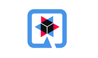

Sobre Este Projeto
Este é um projeto simples em Quarkus demonstrando como usar JAX-RS e Bootstrap.
Resumo do Projeto
Este projeto é uma aplicação Quarkus que usa JAX-RS para serviços web RESTful e Bootstrap para estilização. Ele se conecta a um banco de dados H2 em memória e usa Hibernate ORM para operações de banco de dados. A aplicação é conteinerizada usando Docker e implantada no Kubernetes/OpenShift.
Principais Funcionalidades
- Framework Quarkus
- JAX-RS para APIs RESTful
- Banco de dados H2 em memória
- Hibernate ORM
- Swagger UI para documentação da API
- Docker para conteinerização
- Kubernetes/OpenShift para implantação
Bibliotecas Utilizadas
-  quarkus-rest
- quarkus-jdbc-h2
- quarkus-smallrye-openapi
- quarkus-rest-jackson
- quarkus-hibernate-orm-panache
- quarkus-arc
- quarkus-hibernate-orm
- quarkus-openshift
 quarkus-junit5
quarkus-junit5 rest-assured
rest-assured- jackson-databind
 h2
h2